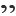

Actions Available in the Markdown Editor
Aside from the actions that are available in Oxygen XML Editor for any type of document (such as the actions in the various menus and the common sections of the toolbar), a variety of unique actions are also available in the Markdown editor, from the toolbar and contextual menu.
Toolbar Actions
The following default actions are available on the Markdown toolbar when editing Markdown documents:
- Header (1st Level)
- Inserts an atx-style first-level header at the cursor position.
 Header (2st Level)
Header (2st Level)- Inserts an atx-style second-level header at the cursor position.
 Header (3rd Level)
Header (3rd Level)- Inserts an atx-style third-level header at the cursor position.
 Horizontal
Rule
Horizontal
Rule- Inserts a horizontal rule at the cursor position.
 Bold
(Strong)
Bold
(Strong)- Marks the selected text with bold.
 Italic
(Emphasis)
Italic
(Emphasis)- Marks the selected text with italics.
- Strikethrough
- Marks the selected text with a strikethrough.
 Code Block
Code Block- Inserts (or surrounds selected text in) a codeblock.
- Blockquote
- Inserts a blockquote at the cursor position.
- Insert Link
-
Opens the Insert Link dialog box that allows you to define a link to insert at the cursor position.
Figure 1. Insert Link Dialog Box 
 Insert
Image
Insert
Image-
Opens the Insert Image dialog box that allows you to define an image to insert at the cursor position. You can type the URL of the image you want to insert or use browsing actions in the
 Browse drop-down menu.
Browse drop-down menu.Figure 2. Insert Link Dialog Box 
 Insert Ordered
List
Insert Ordered
List- Inserts an ordered list at the cursor position. Three child list items are also automatically inserted by default. You can also use this action to convert selected content to an ordered list.
 Insert Unordered
List
Insert Unordered
List- Inserts an unordered list at the cursor position. Three child list items are also automatically inserted by default. You can also use this action to convert selected content to an unordered list.
 Insert Task
List
Insert Task
List- Inserts a task list at the cursor position. Three child list items are also automatically inserted by default. You can also use this action to convert selected content to a task list.
 Insert Table
Insert Table- Inserts a table at the cursor position.
 Tags Display
Mode drop-down menu
Tags Display
Mode drop-down menu-
Allows you to control the amount of markup that is displayed in the Preview pane and offers the following choices:
 Full Tags with
Attributes
Full Tags with
Attributes- Displays full tag names with attributes for both block and inline elements.
 Full Tags
Full Tags- Displays full tag names without attributes for both block and inline elements.
 Block Tags
Block Tags- Displays full tag names for block elements and simple tags without names for inline elements.
 Inline Tags
Inline Tags- Displays full tag names for inline elements, while block elements are not displayed.
 Partial Tags
Partial Tags- Displays simple tags without names for inline elements, while block elements are not displayed.
 No Tags
No Tags- No tags are displayed. This is the most compact mode and is as close as possible to a word-processor view.
- Configure Tags Display Mode
- Opens the Author preferences page where you can configure options regarding tags, such as the default Tags Display Mode, Tags Background Color, Tags Foreground Color, and Tags Font.
Contextual Menu Actions
The following default actions are available in the contextual menu when editing Markdown documents:
 Cut,
Cut,
 Copy,
Copy,  Paste
Paste- Use these actions to execute the typical editing actions on the currently selected content.
- Source submenu
-
This submenu includes the following actions:
- To Upper Case
- Converts the content selection to upper case characters.
- To Lower Case
- Converts the content selection to lower case characters.
- Capitalize Lines
- It capitalizes the first letter found on every new line that is selected. Only the first letter is affected, the rest of the line remains the same. If the first character on the new line is not a letter then no changes are made.
- Convert Hexadecimal Sequence to Character (Ctrl + Shift + X (Command + Shift + X on OS X))
-
Converts a sequence of hexadecimal characters to the corresponding Unicode character. The action can be invoked if there is a selection containing a valid hexadecimal sequence or if the cursor is placed at the right side of a valid hexadecimal sequence. A valid hexadecimal sequence can be composed of 2 to 4 hexadecimal characters and may or may not be preceded by the
0xor0Xprefix. Examples of valid sequences and the characters they will be converted to:0x0045will be converted toE0X0125toĥ265toɥ2190to←Note: For more information about finding the hexadecimal value of a character, see Finding the Decimal, Hexadecimal, or Character Entity Equivalent.
- Base64 Encode/Decode submenu
-
This submenu includes the following actions for encoding or decoding base 64 schemes:
- Import File to Encode and Insert
-
Encodes a file and then inserts the encoded content into the current document at the cursor position.
- Decode Selection and Export to File
-
Decodes a selection of text from the current document and then exports (saves) the result to another file.
- Encode Selection
-
Replaces a selection of text with the result of encoding that selection. By default, a dialog box is displayed that allows you to select the encoding to use. There is an option to choose to not show this dialog box in the future. In this case, the encoding that is specified in the Encoding for Base64, Base32, Hex conversions option in the Encoding preferences page will be used. Likewise, the same is true if the Show the dialog box for choosing the encoding for Base64, Base 32, Hex conversions option is not selected in the Messages preference page.
- Decode Selection
-
Replaces a selection of text with the result of decoding that selection. By default, a dialog box is displayed that allows you to select the encoding to use. There is an option to choose to not show this dialog box in the future. In this case, the encoding that is specified in the Encoding for Base64, Base32, Hex conversions option in the Encoding preferences page will be used. Likewise, the same is true if the Show the dialog box for choosing the encoding for Base64, Base 32, Hex conversions option is not selected in the Messages preference page.
- Modify All Matches
- Use this option to modify (in-place) all the occurrences of the selected content (or the contiguous fragment where the cursor is located). When you use this option, a thin rectangle replaces the highlights and allows you to start editing. If matches with different letter cases are found, a dialog box is displayed that allows you select whether you want to modify only matches with the same letter case or all matches.
- Base32 Encode/Decode submenu
-
This submenu includes the following actions for encoding or decoding base32 schemes:
- Import File to Encode and Insert
-
Encodes a file and then inserts the encoded content into the current document at the cursor position.
- Decode Selection and Export to File
-
Decodes a selection of text from the current document and then exports (saves) the result to another file.
- Encode Selection
-
Replaces a selection of text with the result of encoding that selection. By default, a dialog box is displayed that allows you to select the encoding to use. There is an option to choose to not show this dialog box in the future. In this case, the encoding that is specified in the Encoding for Base64, Base32, Hex conversions option in the Encoding preferences page will be used. Likewise, the same is true if the Show the dialog box for choosing the encoding for Base64, Base 32, Hex conversions option is not selected in the Messages preference page.
- Decode Selection
-
Replaces a selection of text with the result of decoding that selection. By default, a dialog box is displayed that allows you to select the encoding to use. There is an option to choose to not show this dialog box in the future. In this case, the encoding that is specified in the Encoding for Base64, Base32, Hex conversions option in the Encoding preferences page will be used. Likewise, the same is true if the Show the dialog box for choosing the encoding for Base64, Base 32, Hex conversions option is not selected in the Messages preference page.
- Modify All Matches
- Use this option to modify (in-place) all the occurrences of the selected content (or the contiguous fragment where the cursor is located). When you use this option, a thin rectangle replaces the highlights and allows you to start editing. If matches with different letter cases are found, a dialog box is displayed that allows you select whether you want to modify only matches with the same letter case or all matches.
- Hex Encode/Decode submenu
-
This submenu includes the following actions for encoding or decoding hex schemes:
- Import File to Encode and Insert
-
Encodes a file and then inserts the encoded content into the current document at the cursor position.
- Decode Selection and Export to File
-
Decodes a selection of text from the current document and then exports (saves) the result to another file.
- Encode Selection
-
Replaces a selection of text with the result of encoding that selection. By default, a dialog box is displayed that allows you to select the encoding to use. There is an option to choose to not show this dialog box in the future. In this case, the encoding that is specified in the Encoding for Base64, Base32, Hex conversions option in the Encoding preferences page will be used. Likewise, the same is true if the Show the dialog box for choosing the encoding for Base64, Base 32, Hex conversions option is not selected in the Messages preference page.
- Decode Selection
-
Replaces a selection of text with the result of decoding that selection. By default, a dialog box is displayed that allows you to select the encoding to use. There is an option to choose to not show this dialog box in the future. In this case, the encoding that is specified in the Encoding for Base64, Base32, Hex conversions option in the Encoding preferences page will be used. Likewise, the same is true if the Show the dialog box for choosing the encoding for Base64, Base 32, Hex conversions option is not selected in the Messages preference page.
- Modify All Matches
- Use this option to modify (in-place) all the occurrences of the selected content (or the contiguous fragment where the cursor is located). When you use this option, a thin rectangle replaces the highlights and allows you to start editing. If matches with different letter cases are found, a dialog box is displayed that allows you select whether you want to modify only matches with the same letter case or all matches.
- Join and Normalize Lines (Ctrl + J (Command + J on OS X))
- For the current selection, this action joins the lines by replacing the line separator with a single space character. It also normalizes the whitespaces by replacing a sequence of such characters with a single space.
- Insert new line after (Ctrl + Alt + Enter (Command + Alt + Enter on OS X))
- This action has the same result as moving the cursor to the end of the current line and pressing the ENTER key.
- Modify All Matches
- Use this option to modify (in-place) all the occurrences of the selected content (or the contiguous fragment where the cursor is located). When you use this option, a thin rectangle replaces the highlights and allows you to start editing. If matches with different letter cases are found, a dialog box is displayed that allows you select whether you want to modify only matches with the same letter case or all matches.
- Open submenu
-
The following actions are available in this submenu:
- Open File at Cursor
- Opens the file at the cursor position in a new panel. If the file path represents a directory path, it will be opened in system file browser. If the file at the specified location does not exist, an error dialog box is displayed and it includes a Create new file button that starts the New document wizard. This allows you to choose the type or the template for the file. If the action succeeds, the file is created with the referenced location and name and is opened in a new editor panel. If the file is an image file, it will be opened in the Image Preview pane.
- Open File at Cursor in System Application
- Opens the file (identified by its link) or web page (identified by a web link) found at the cursor position. The target is opened in the default system application associated with that file type.
- Compare
- Opens the current file in the Compare Files tool.
- Show/Hide Preview
- A toggle action that shows or hides the Preview pane.
- Export as DITA Topic
- Converts the current Markdown document into a DITA topic.
- Export as XDITA Topic
- Converts the current Markdown document into a Lightweight DITA XML topic.
- Export as HTML
- Converts the current Markdown document into an XHTML document.
- Print (Available in the Preview pane)
- Opens a page setup dialog box that allows you to configure printing options for the current document.